모두가 함께하는 지속 가능한 아름다운 미래
책임 있는 제품 생산과
지속 가능한 공급망을 위해
노력합니다.
저감·전환·순환의 원칙 아래 친환경 포장재와 물류 방식을 도입해 환경 영향을 줄입니다.
규제를 준수하며 재활용 가능 소재와 대체재를 적극 검토합니다.
Responsible Products
& Supplychain
모두에게 이로운 가치를
창출하기 위해 노력합니다.
레디우스는 장애 예술가 작품을 활용하며 정당한 보상과 지원을 제공합니다.
수익 연계 사회 환원과 지역사회 건강 형평성 활동도 진행합니다.
Value Creation
for Everyone
우리는 신뢰할 수 있는
기준을 세우고 투명하게
운영합니다.
준법과 윤리 경영을 바탕으로 책임 있는 공급망과 내부 통제 체계를 운영합니다.
제품·서비스 관련 핵심 지표와 ESG 진행 상황을 투명하게 정기 공개합니다.
Transparent
Management
함께하는 발달장애 작가 작품
-
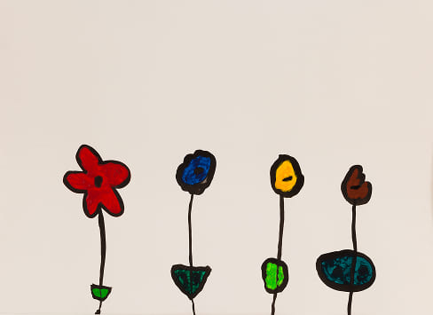
꽃밭의 꽃 네송이」는 오방색을 바탕으로 단순화된 네 송이 꽃을 통해 자연의 총체적 아름다움을 담아낸 작품입니다. 이소연은 개별 꽃을 넘어, 모든 생명의 다양성과 조화를 상징적으로 보여줍니다.
-
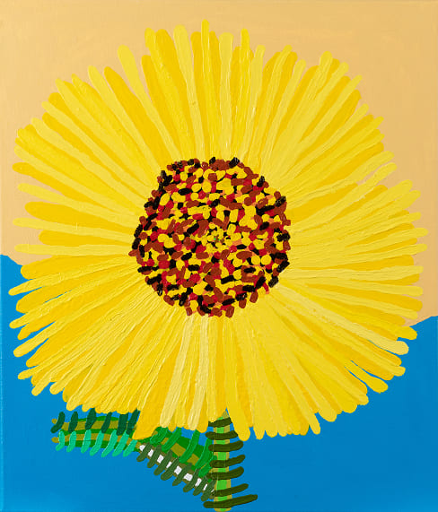
「해바라기」는 화면을 가득 메운 노란 꽃잎과 점묘적 색채로 삶의 강한 에너지를 전합니다. 이소연은 태양을 향해 뻗어 나가는 해바라기를 통해 희망과 생명의 힘을 표현합니다.
-
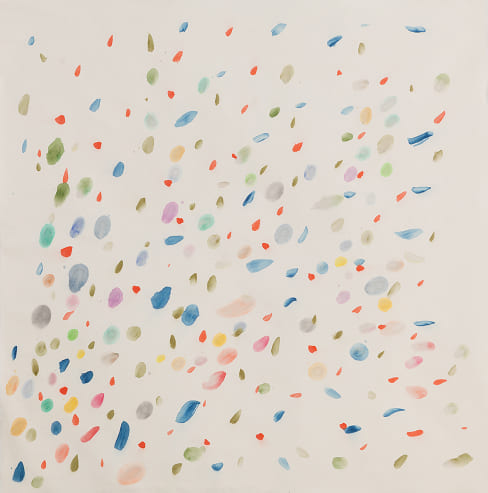
「바람에 흩날리는 물방울」은 점묘의 색채가 모여 바람의 흐름을 그려낸 작품입니다. 이소연은 보이지 않는 자연의 숨결을 한국화의 감각으로 담아냅니다.
-
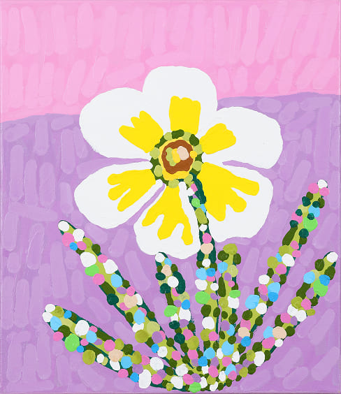
「수선화」는 점묘의 색채가 모여 생명력 가득한 꽃의 울림을 전하는 작품입니다. 이소연은 단순한 꽃의 재현을 넘어, 자연의 기운과 희망을 화면 위에 피워냅니다.
-
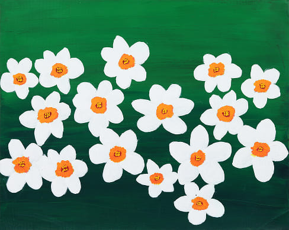
김지호의 「수선화」는 짙은 초록 배경 위에 흰 꽃잎과 주황색 꽃술의 대비로 이루어진 작품입니다. 화면 전체에 흩날리듯 배치된 수선화들은 군집을 이루면서도 각기 다른 표정을 가진 듯 생동감 있게 다가옵니다.
-
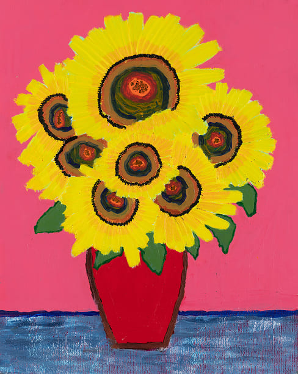
「해바라기 화병」은 강렬한 원색과 반복적 붓질로 화면을 가득 채운 작품입니다. 김지호는 몰입의 시간을 꽃의 형상 속에 담아, 해바라기를 생명력의 상징으로 재탄생시킵니다.
-
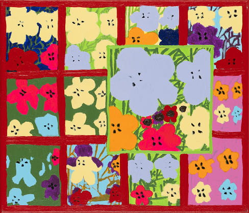
「풀밭의 꽃」은 다채로운 색감과 반복된 꽃의 변주로 화면을 하나의 감각적 정원으로 완성한 작품입니다. 김지호는 칸마다 다른 리듬을 부여해, 시선과 시간을 오가며 꽃밭의 생명력을 전합니다.
-
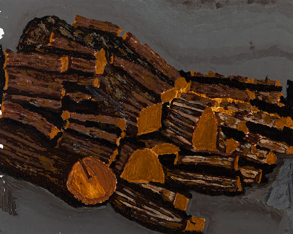
「지호나무」는 잘린 장작더미를 반복된 붓질로 담아내며, 시간의 흔적과 생명의 무게를 전합니다. 김지호는 나무의 결과 단면을 붓질의 반복과 두텁게 쌓인 시선속에서 작가만의 묵직한 울림을 줍니다.
-
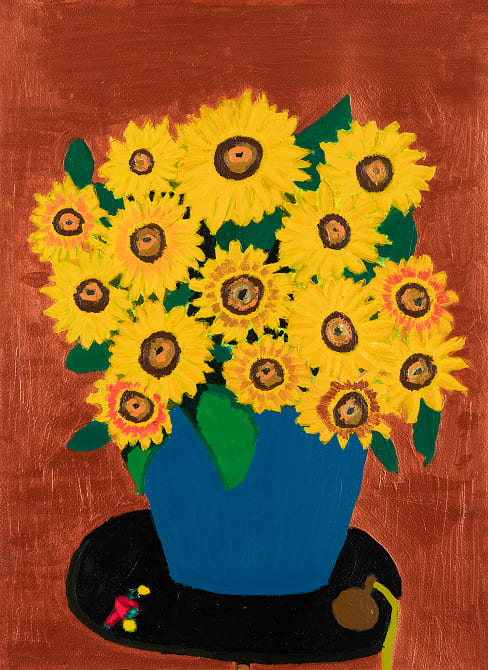
「해바라기」는 화면을 가득 메운 노란 꽃송이들은 일정한 패턴 속에서도 각기 다른 크기와 붓질을 통해 개별적 생명력을 드러냅니다. 강렬한 원색과 반복적 붓질 속에서 해바라기는 생명력과 몰입의 이야기성을 동시에 품어냅니다.
-
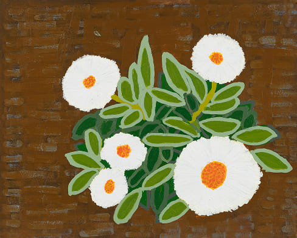
「민들레」는 단순하고 또렷한 색채 대비 속에서 소박하지만 강인한 생명력을 표현한 작품입니다. 김지호는 반복된 붓질과 명료한 형상을 통해 민들레의 소박한 아름다움을 회화적으로 재해석했습니다.
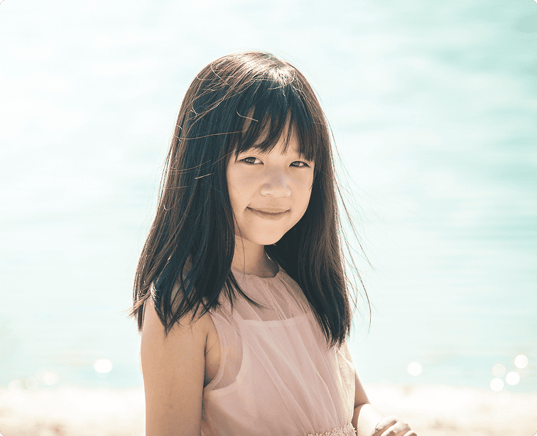
Signature Initiative
레디우스는 발달장애 예술가의
창작 활동을 사회와 연결합니다.
Impact Pathway
지역사회 선순환
창작 지원 정당한 보상 사회적 인식 개선 안정적 창작 환경 지역사회 선순환
Responsible Products
& Services
이데아약품의 사업
Pharma Distribution : 안전을 최우선으로 규정에 맞는 보관·운송·추적을 관리. Cosmetics (RADIEUX) : 원료·라벨·광고를 책임 있게 관리하며 안전과 효능을 지킴. Medical Tourism &
Consulting : 환자와 의료기관, 지역 자원을 투명하게 연결. Medical Devices: : 안전과 임상 편의를 고려한 품질 관리 체계를 운영.
1 Year 단기 계획
RADIEUX 협업 정책 공개,참여 작가
확대, ESG 핵심지표(KPI)
설정 및 최초 공시
3 Year 중기 계획
포장재 전환 로드맵 실행,사회 환원 프로그램
구조 고도화, 공급망 행동규범
적용 범위 확대
5 Year 장기 계획
ESG 리포트 정례화,이해관계자 참여형
거버넌스
구축